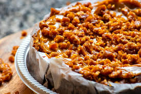

Peanut Butter Pie

This peanut butter pie recipe is very easy to make. Garnish with peanut butter cups for an extra special treat!
Ingredients
- Cream cheese: This rich and creamy peanut butter pie starts with a package of cream cheese.
- Peanut butter: Of course, you'll need peanut butter! Opt for the smooth kind.
- Confectioners' sugar: Make sure you use confectioners' (a.k.a. powdered) sugar, as it'll blend smoothly into the filling.
- Frozen whipped topping: A container of frozen whipped topping (such as Cool Whip) is another shortcut ingredient.
- Graham cracker crust: Use a store-bought or homemade graham cracker crust.
- Peanut butter cups: Garnish the pie with peanut butter cup candies, such as Reese's.
Steps
- Mix together the first three ingredients until smooth.
- Fold in half of the whipped topping, then pour the mixture into the crust.
- Top with the remaining whipped topping and garnish with peanut butter cups.
- Chill for at least two hours before serving.